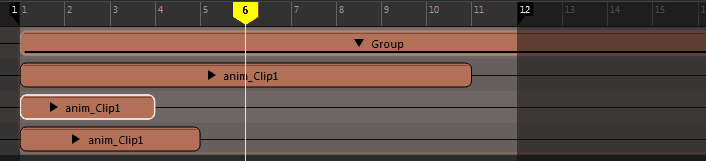
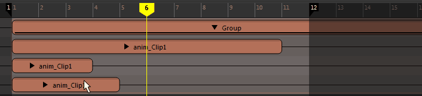
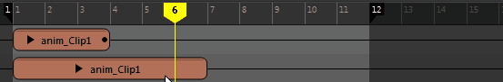

- 有关管理时间编辑器轨迹（例如，调整大小、禁用或复制）的信息，请参见使用时间编辑器轨迹。
- 有关编辑片段的动画曲线的信息，请参见在曲线图编辑器中修改时间编辑器片段。
- 移动片段
- 单击片段，然后向左或向右拖动它。使用框选矩形选择，可以在时间视图中选择多个片段以同时全部移动它们。
- 分割片段
- 选择片段，将当前时间标记移动到所需的分割位置，然后按 1。
有关对片段进行涟漪编辑以使相邻片段补偿缺失片段的信息，请参见下文中的“对片段进行涟漪编辑”。
 注： 应用“保持”(Hold)或“循环”(Looping)之后，片段无法分割。相反，先使其变为组片段，然后再进行分割。
注： 应用“保持”(Hold)或“循环”(Looping)之后，片段无法分割。相反，先使其变为组片段，然后再进行分割。 - 复制片段
- 选择片段，按 Ctrl-C，将当前时间标记移动到所需的粘贴位置，然后按 Ctrl-V。
重要： 在时间编辑器中的其他位置重用动画源时，其标题的所有实例均采用斜体形式。如果修改合成中的动画源片段，这有助于您避免修改片段。请注意，不要打开曲线图编辑器或移动动画上的关键帧，否则将更改源动画。若要创建某个版本的动画源以便对其进行编辑，请在片段上单击鼠标右键，然后从时间编辑器“片段”(Clip)上下文菜单中选择“使动画源唯一”(Make Animation Source Unique)。这样可以使选定的动画源独立于其原始片段。

-
比例(Scale)

- 用于加快或减慢片段的动画速度。从“编辑模式”(Edit Mode)菜单中选择“缩放”(Scale)，然后将光标放到片段的左边或右边。请注意光标外观的变化。拖动光标即可缩放。

缩放百分比将显示在片段的顶部。
提示： 也可以在选择片段后按住 R 键来激活“缩放”(Scale)模式。注： 系统将在片段的修剪边或延伸边处显示一些特殊符号，用于说明内部所含动画的状态。有关详细信息，请参见时间编辑器片段符号。 -
修剪(Trim)

- 用于设置片段的输入和输出点，这样只有原始源的一部分影响片段。从“编辑模式”(Edit Mode)菜单中选择“修剪”(Trim)，然后将光标放到片段的左边或右边。请注意光标外观的变化。拖动光标即可修剪。

片段顶部的负数表示已修剪的帧数。
子片段上的白点表示它因父片段而修剪。如果子片段太小而无法显示，则不显示白点。
已修剪片段上的黑点表示在片段之外有动画。
有关详细信息，请参见时间编辑器片段符号。 -
提示： “修剪”(Trim)模式是时间编辑器的默认“编辑”(Edit)模式。也可以在选择片段后按住 E 键来激活“修剪”(Trim)模式。
- 涟漪编辑片段
- 用于在时间轴中调整片段，而不影响相邻片段。此选项处于活动状态时，对片段中一个快照所做的更改将传播到其他快照。因此，如果加长一个快照，则其他快照也会随之移动，以保持与经过修改的快照之间的距离。
- 通过单击时间编辑器工具栏上的“涟漪”(Ripple)图标
 ，可激活“涟漪编辑”(Ripple Edit)模式。
，可激活“涟漪编辑”(Ripple Edit)模式。
 注： “涟漪编辑”(Ripple Edit)模式仅影响编辑右侧的片段。编辑左侧的片段将不受影响。
注： “涟漪编辑”(Ripple Edit)模式仅影响编辑右侧的片段。编辑左侧的片段将不受影响。 - 循环(Loop)
- 用于多次按顺序重复片段的动画。从“编辑模式”(Edit Mode)菜单中选择“循环”(Loop)，将光标放到片段的左边或右边，然后拖动以进行循环。

若要调整循环，请单击并拖动片段的已循环区域的边。显示的“之后的循环”(Loop After)值（上图中为 0.3）表示片段包含的循环数。如果循环片段的左侧，则它是“之前的循环”(Loop Before)值。 缩放、修剪或循环片段时，片段的虚拟边界将变为实际边界以执行所有编辑操作。
提示： 也可以在选择片段后按住 T 键来激活“循环”(Loop)模式。 - 通过“属性编辑器”(Attribute Editor)中的“之前的片段循环模式”(Clip Loop Before Mode)/“之后的片段循环模式”(Clip Loop After Mode)，您可以分别在片段的开始和结束处设置循环。您可在其中找到两类循环模式：“周期”(Cyclical)模式会重复动画本身，而“渐进”(Progressive)模式会在偏移的基础上重复动画，因此可用于创建循环行走。有关这两种循环方法的说明，请参见时间编辑器中的循环类型。
-
注： 应用“保持”(Hold)或“循环”(Looping)之后，片段无法分割。可以改为先将其变为组片段，然后再进行分割。
-
注： 若要使用具有循环片段的动画层，请从该片段创建组片段，然后将层添加到组。
- 请参见：
- 保持(Hold)

- 用于延伸片段的最后一个姿势帧，使其保持指定的一段时间。从“编辑模式”(Edit Mode)菜单中选择“保持”(Hold)，然后将光标放置到片段的左边或右边。请注意光标外观的变化。将光标拖动到所需的“保持”(Hold)长度。
-
 提示： 也可以在选择片段后按住 Y 键来激活“保持”(Hold)模式。
提示： 也可以在选择片段后按住 Y 键来激活“保持”(Hold)模式。 -
注： 应用“保持”(Hold)或“循环”(Looping)之后，片段无法分割。可以改为先将其变为组片段，然后再进行分割。
- 延伸父片段
- 调整组片段大小，使之包括其中所含片段的完整长度。编辑组片段内的片段（移动、修剪或缩放）时，无法将它延伸到超过组（其父片段）的边界。这是因为子片段始终受父片段约束。
注： “延伸父片段”(Extend Parent)选项将展开组片段，使其仅容纳选定片段的完整动画。

延伸父片段
- 在组片段内的片段上单击鼠标右键，然后从时间编辑器片段(Clip)上下文菜单中选择“延伸父片段”(Extend Parent)
- 拖动组片段的边以手动延伸其持续时间
注： 仅当子片段的边界在父片段的范围之内时，才会发生组片段的延伸。如果子片段已经在范围之外，则组片段不会延伸。请参见编辑组片段内的片段。 - Crossfade 片段
- 重叠任何两个相邻片段。Crossfading 发生在重叠的区域中。
-

- 可以设置有关要使用的 crossfade 类型的选项，或者在片段(Clip)上下文菜单中的 Crossfade 选项中创建自定义 crossfade 效果。
- 在片段上设置关键帧
- 您可以在包含片段层的动画片段上设置关键帧，其方法类似于在 Maya 中向动画添加动画层。
注： 您无法在时间编辑器中同时使用动画层和片段层驱动动画，因为这会产生冲突。
- 请参见将片段层添加到时间编辑器。
- 加权片段
-
调整片段的权重时，可以控制它相对于生成的动画中其他片段的影响程度。混合权重越高，片段对动画的影响就越大。
- 请参见设置时间编辑器片段权重的关键帧。
- 重命名片段
- 在片段上单击鼠标右键，然后从片段(Clip)上下文菜单中选择“重命名”(Rename)。